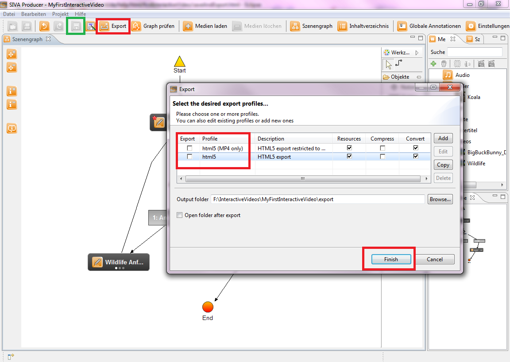
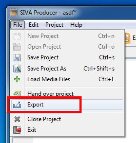
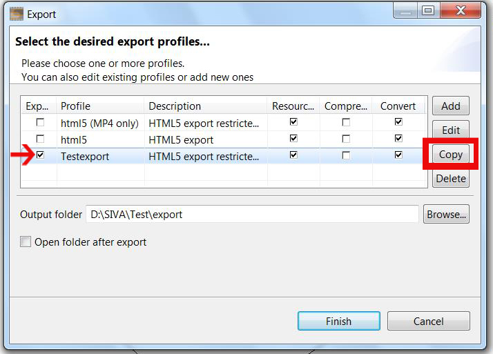
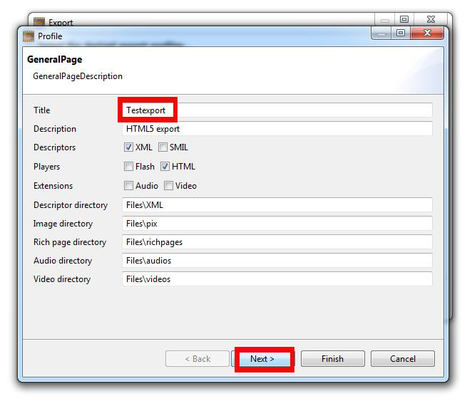
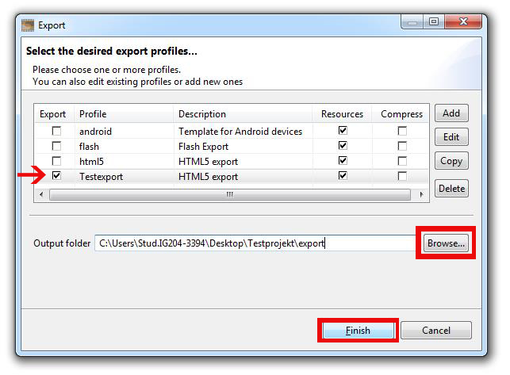

Exporting a video project
Now your fist interactive video is ready and can be saved or exported.
- If you want to save the video, click onto the save-button.
It has a green border on the picture. Saving a project means, that all information is saved, so that you can open or edit
it again in the SIVA-producer.
- If you want to export the video, click on the export-button.
It has a red border in the picture. Exporting a project means, that all information is saved in a file, so that you can
watch the video in a media player.

If you clicked on the "Export"-button, a window where you can choose a profile, that you want to export (for example a audio
or video file) opens.
Furthermore you choose the target directory, in which the file should be saved.
Afterwards click onto the "Finish"-button to start the exporting process.
Export in detail
- Open the exporting-window in the producer by opening "File" --> "Export" or just by clicking onto the "Export"-button
in the taskbar
 .
.

- Create a new profile:
- To create a new profile with the same adjustments as the one you created, click onto the exporting-profile "html5"
and then click onto "Copy"-button.

- A new window opens where you can choose a title for your profile, keepe the other settings and click onto
"Next".

- During the following steps you can deselect further settings for the audio- and video-settings.
- After that click onto "Finish" to create your new profile.
- Now you can choose which of the appearing profiles should be used for your export by selecting them in the "Export"-column
with a check mark.
- As a last step you choose the file where your exported project should be saved in, at "Output folder" and finish
the export with a click onto "Finish". Now the project will be exported.

- After the export finished, for each selected export profile you should see a subfolder inside the chosen "Output folder".
Watching a video is as simple as opening the "index.html" found inside these subfolders in your favorite browser.
Congratulations, you have created your first hypervideo! For more details, you may refer to the components section of this help.